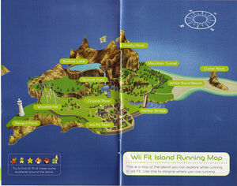

Wii Fit
Dispite what many know, Wuhu Island was first seen, as an official release, in Wii Fit when it released on December 1st, 2007 in Japan and May 21, 2008 in North America. During this time, Wuhu Island was referred to as "Wii Fit Island" and looked a tad bit different than the traditional Wuhu Island we know today. Wii Fit Island was only seen during the jogging minigame in Wii Fit.

Wii Fit Island (from Wii Fit Manual) - Source: Here